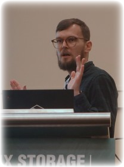

Mount notifications
There are a handful of extensions to the "new" mount API that Christian Brauner wanted to discuss as part of a filesystem session at the 2024 Linux Storage, Filesystem, Memory Management, and BPF Summit. In the session, though, the only one that he got to was a followup to last year's discussion on mount-operation monitoring. There is a need for user-space programs to be able to follow mount operations (e.g. mount and unmount) that happen in the system, especially for tools like container managers or systemd.
He began by briefly listing the potential topics in his slides, but noted that he was doubtful that he would get far into the list—or even past the first. He chose to focus on mount-operation monitoring (or mount notifications) as it is "the most pressing and interesting issue for user space". The idea is that user-space tools can register for mount-related events, which will allow them to track the state of the mount tree.

Brauner thinks the right way forward is to use fanotify, rather than the watch-queue-based notifications that David Howells had originally proposed. Howells clarified that his patches were meant to also provide a way for user space to query the mount topology using a new system call; the notification part was implemented on top of watch queues.
He said that fanotify has "a lot of desirable properties, such as missed-event notifications when the queue overruns". He said that Josef Bacik had some experience with the problems of queue overruns for some systems running container workloads with events from up to 10,000 mounts that were propagated all over the mount tree. Brauner thinks that the overrun problem has been solved at this point, however. Programs can use listmount() with the unique 64-bit mount ID when they find out that they have missed events; that will give them the mount IDs of child mounts that they can further query.
Amir Goldstein said that the information needed could also be part of the event message when the mount notification happens, preferably as a file handle for the mount. Brauner agreed that made sense, rather than returning an O_PATH file descriptor, which is another option. That kind of file descriptor would allow opening any mount on the system, so it provides "an extremely privileged interface", while a file handle would not.
There is a need to "decide which objects we want to watch", Goldstein said; will the watches be placed on parent mounts or on subtrees? Brauner said that Howells's patches could watch an entire mount namespace or subtrees. There are use cases where you want to watch all of the mounts in a container, Brauner said, so that is where a mount-namespace watch would make sense; there are also services that only use a subtree so they will want to only get events for that part of the tree.
Goldstein agreed that it made sense to have both, but was not sure how to implement the subtree watches. Brauner said that there is a potential race condition because new mounts in the subtree do not inherit the watch, so any mounts that happen before it is established might be lost. He is not sure that is a real problem, so long as there is a way to query the state of the mount tree right after the watch is established on a new mount. Jan Kara said that a watch only gets informed about events for the immediate children of a mount, which makes implementing a recursive mount watch in user space painful.
The whole reason for adding mount notifications is to perform better than the existing practice, which involves frequently parsing /proc/self/mountinfo, so some performance numbers should be gathered, Brauner said. It should be faster "and I'm pretty sure that it is, but we should have some numbers".
Solving the mount-notification problem is something that filesystem developers "should aim to get done this year", he said. It is longstanding and "kind of a shame that we have not correctly solved it yet". Goldstein said that there have been performance problems with recursive watches in the past, but those were for directories, which have a higher volume of events than mounts; he does not see that as a real problem for mounts.
Brauner asked about the interaction between mount notifications and pivot_root(); he wondered if any watches on the old root were copied to the new as part of that operation. Howells said that because the watches are associated with the mount object, not the mount namespace directly, they would get lost when pivot_root() is called. The discussion seemed to indicate that something would need to be done to maintain the watches in that case.
The session wrapped up with a bit of discussion on implementation; Brauner said that he had wanted to get something working for a while now. Goldstein said that once an API was decided on, it would not be all that hard to implement mount notifications. Howells said that his code could be used as a starting point. Goldstein suggested that a simple API for watching child mounts of a given parent would be straightforward to develop, then additions could be made for more complicated scenarios (presumably for things like recursive watches) based on that work.
| Index entries for this article | |
|---|---|
| Kernel | fanotify |
| Kernel | Filesystems/Mounting |
| Conference | Storage, Filesystem, Memory-Management and BPF Summit/2024 |
Posted Jul 3, 2024 22:17 UTC (Wed)
by geofft (subscriber, #59789)
[Link] (3 responses)
I see a very terse mention in the slide about permissions:
> Opt-in way of getting an O_PATH fd or file handle to the mount. (File handle might be more “secure” because to turn it into an fd you need CAP_DAC_READ_SEARCH /* ToDo: explore to relax to ns_capable(mountdirfd->mnt_ns->user_ns) */)
but I am not sure what it means :) and it kind of sounds like it's talking about permissions about accessing the mounts reported in a notification event, not permissions to set up the notification in the first place.
Posted Jul 3, 2024 23:52 UTC (Wed)
by josh (subscriber, #17465)
[Link] (2 responses)
File handles are something a filesystem guarantees as unique, but you can't do anything with them unless you have CAP_DAC_READ_SEARCH, the permission root and typically no other user has that means "ignore file permissions".
Posted Jul 6, 2024 2:24 UTC (Sat)
by aaronmdjones (subscriber, #119973)
[Link] (1 responses)
Posted Jul 6, 2024 9:08 UTC (Sat)
by josh (subscriber, #17465)
[Link]
Posted Jul 4, 2024 8:18 UTC (Thu)
by bluca (subscriber, #118303)
[Link]
Mount notifications: fanotify and permissions
Mount notifications: fanotify and permissions
Mount notifications: fanotify and permissions
Mount notifications: fanotify and permissions
Nice stuff